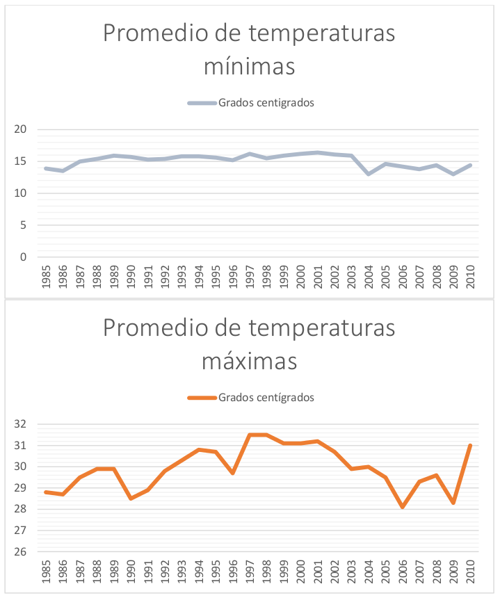

Sustentabilidad y Medio Ambiente
Por TrcIMPLAN, 01/10/2014
Coordinador
Ignacio Chong
Asesor
Susana Montano
Secretario
Jair Miramontes
Expertos Invitados
- Luis Rey Delgado
- José Armando García Triana
- Guillermo Morales Aguilar
- Arturo Vaca Duran
- Rafael Rodríguez Martínez
- Gonzalo G. García
- Celso Manuel Valencia
- Areli Magdiel López
- Víctor Manuel Cabrera
- Francisco Valdés Perezgasga
- Ignacio Chong López
- Iván Gutiérrez/ Dely Ramírez
- Diana Susana Estens De La Garza
- Jesús Mario Castrillón
- Agustín Gonzales Grant
- Glenda Aimeé Quintero Carrillo
- Gladys Aguirre Balza
- Antonio Chincoya Carmona
- Fernando Hasso Almaguer
- María Susana García Veyna
- Refugio Loya
- Lucio Silva
- Gregorio Ruiz
- Sergio Gutiérrez R.
- Virginia Camacho
- Juan Carlos Mota
- Luis Fernando Montano
- Servando Zarate Muñoz
- Gerardo Alba Castillo
- Mauro Esparza Flores
Uso del agua superficial y subterránea en la ZML
Usos del agua en la región Lagunera (2009) en millones de metros cúbicos
| Origen | Agropecuario | Abastecimiento Público | Industrial Agregado | Termoeléctricas | Total |
|---|---|---|---|---|---|
| Agua superficial | 1,057 | 0.2 | 0 | 0 | 1,057.2 |
| Agua subterránea | 711 | 164.3 | 14 | 11.5 | 900.8 |
| Total | 1,768 | 164.5 | 14 | 11.5 | 1,958.0 |
Fuente: RHA CCN = Región Hidrológica Administrativa-Cuencas Centrales del Norte
Fuente: CONAGUA. Estadísticas del Agua, 2011
- La intensidad de extracción de agua a que se ha sometido al acuífero principal sobre todo en la zona urbana y alrededores, donde se encuentran los pozos de abastecimiento para la población ha causado el abatimiento de los niveles freáticos y como consecuencia, la intrusión de agua con altos contenido de sólidos, entre ellos el arsénico y flúor. Ambos contaminantes tienen un cierto grado de toxicidad por lo que representan un riesgo para la salud de los habitantes de la zona metropolitana de La Laguna. EL organismo operador de Torreón (SIMAS) reconoce que más del 25% de los pozos que abastecen a la ciudad tienen niveles de arsénico por encima del límite máximo fijado por la NOM-127-SSA1-1994 (modificada, año 2000), que es de 25 mg/L.
Emisiones de contaminantes por Fuentes fijas y fuentes de área
- Las fuentes fijas instaladas en la región de la Comarca Lagunera (industrias de jurisdicción federal y estatal), contribuyen con el 81% del total de SO2 que se emitió a la atmósfera en 2005, con el 66% de las partículas PM10, 69% de las PM2.5 y el 38% de los NOX. Las 27,378 toneladas de SO2 que se estima fueron emitidas, se deben al uso de combustibles con alto contenido de azufre, principalmente el combustóleo en la generación de energía eléctrica, con una contribución del 97%.
- Las fuentes de área representan el 37% del total de las emisiones de COV que se emiten en la región, el 31% de las PM10, y el 98% de las emisiones de amoniaco. El principal contaminante emitido por las fuentes de área es el amoniaco, pues se estimó que se emitieron más de 8 mil toneladas durante 2005.
- La principal contribución en estas emisiones se debe a las actividades de limpieza de superficies industriales con un 25%, seguido por el almacenamiento y distribución de gas LP, y el uso doméstico de solventes con un aporte del 23% y 21%.
- Otro contaminante que se emite en gran cantidad por las fuentes de área son las PM10; estas fuentes aportan alrededor del 31% del total de las emisiones en la Comarca Lagunera.
Residuos Sólidos
- Anualmente se recolectan 343,285.49 toneladas de basura en la Zona Metropolitana de la Laguna, lo cual equivale aproximadamente a ¼ de tonelada por habitante, inferior a los 430 kilos por persona que se generan en promedio en las 78 Zonas Metropolitanas estudiadas por IMCO. Los rellenos sanitarios de la ZML en conjunto cuentan con una capacidad de 4,963,200 m3.
- Solo el 10% de la basura generada en Torreón (cartón, papel, PVC, PET, aluminio, chatarra y tetrapack) es reciclada.
- Actualmente en nuestro país se recicla el 11% de la basura que se genera, la meta del Gobierno de la República es duplicar este porcentaje al 2018.
Fuente: SEMARNAT
Energía eléctrica
Usuarios por sector y consume anual de energía eléctrica del 2008 al 2013 (Usuarios / Consumo anual)
| Ramo | 2008 | 2009 | 2010 | 2011 | 2012-13 |
|---|---|---|---|---|---|
| Total | 100.0% / 100.0% | 100.0% / 100.0% | 100.0% / 100.0% | 100.0% / 100.0% | 100.0% / 100.0% |
| Industrial y de servicios | 9.4% / 62.1% | 9.4% / 65% | 9.2% / 61% | 8.9% / 62.8% | 9.4% / 62% |
| Doméstico | 89.4% / 18% | 89.5% / 17.3% | 89.6% / 19% | 90.0% / 18.6% | 89.5% / 18.6% |
| Agrícola | 0.4% / 17% | 0.4% / 14.7% | 0.4% / 17.2% | 0.4% / 16.1% | 0.4% / 16.9% |
| Alumbrado público | 0.7% / 2.1% | 0.7% / 1.9% | 0.7% / 2.2% | 0.7% / 2% | 0.7% / 2% |
Fuente: Elaboración propia con datos de INEGI Cuaderno estadístico 2008, 2009, 2010, 2011, 2012, 2013
- El sector industrial que conforma aproximadamente el 10% de los usuarios de energía eléctrica es el que más consume, entre 61% y 65%. El sector doméstico conforma alrededor del 90% de los usuarios entre 17% y 19% de energía eléctrica.
Existencia de las normas sobre ordenamiento ecológico
- Torreón y Matamoros carecen de Programa de Ordenamiento Ecológico incumpliendo con ello la normatividad aplicable, mientras Gómez Palacio y Lerdo si cuentan con él.
Superficie de área verde por habitante
- Según el Programa de parques y bisques urbanos. Informe 2013 de la SEMA, Torreón cuenta con 4.9 m2 de áreas verdes urbanas por habitante y Matamoros con 2.6 m2/hab. Mientras que la OMS recomienda una superficie entre 9 y 12 m2 de distribuidos equitativamente en relación a la densidad de población y, por tanto, de edificación. (Rivas, 2005; SMA, 2014, SEMA2013)
Proporción de areas verdes urbanas (AVU) con respecto a la superficie de suelo urbano
| Municipio | Superficie total (ha) | Superficie rural total (ha) | % | Superficie urbana total (ha) | m2 | % | Superficie de AVU totales (SEMA) m2 | AVU respecto al suelo urbano |
|---|---|---|---|---|---|---|---|---|
| Matamoros | 82,163.73 | 77,247.74 | 94.02% | 4,915.99 | 9,159,900.00 | 5.98% | 282,579.64 | 0.6% |
| Torreón | 124,199.75 | 110,690.11 | 89.12% | 13,509.64 | 135,096,400.00 | 10.88% | 3,138,863.31 | 2.3% |
Distribución de las áreas verdes en Torreón
- En la distribución especial de las áreas verdes que se encuentran dentro de la ciudad, se observa un alto grado de fragmentación.
- El fragmento de cobertura vegetal urbana más grande es el Club Campestre de la Rosita.
- La proporción de áreas verdes urbanas en Torreón y Matamoros con respecto al suelo urbano de cada municipio es muy baja, 2.3% y 0.6% respectivamente.
- Se observa un desequilibrio entre suelo urbano y la superficie que se considera como áreas verdes urbanas. Éstas últimas cifras posiblemente se encuentren sesgadas porque el concepto de áreas verdes urbanas que toma el INEGI incluye superficie de plazas, escuelas, cementerios, centros de atención médica, mercados y templos, las cuales son áreas construidas.
- No se cuenta con la cifra de la superficie de la cobertura vegetal que se encuentra fuera del suelo urbano. La propia falta de datos oficiales que manejen los mismos conceptos de áreas verdes, áreas verdes urbanas para la ZML, así como los específicos de áreas verdes urbanas de Gómez Palacio y Lerdo, evidencian el rezago de la región en este aspecto
Desertificación
- De acuerdo a reportes de la Organización de las Naciones Unidas, la Comarca Lagunera es una de las zonas más erosionadas de México. Se ve afectada por dos graves procesos de desertificación, el primero es el sobre-pastoreo que excede en un 400% la capacidad de carga recomendada en la zona, ocasionando la compactación del suelo por el pisoteo del ganado, misma que reduce la capacidad de infiltración del agua al subsuelo e incrementa así los escurrimientos superficiales. El segundo proceso es la deforestación de la Sierra Madre Occidental causada por la tala excesiva. Además de lo anterior, una helada registrada en febrero del 2011 afectó una gran masa vegetal.
Promedio histórico de temperaturas.

Fuente: Plan Rector de la ZonaMetropolitana de la Laguna.
- En 26 años que se han registrado se observa que las temperaturas máximas tienden al aumento y las temperaturas mínimas tienden a disminuir. Ambas de manera gradual y paulatina.
Se insertarán las conclusiones al término
Bienvenida
- Lic. Eduardo Holguín - gobiernos encargados del desarrollo económico y social. dejar la planeación para los ciudadanos.
- C. Ignacio Chong - desaparición de culturas, comunidades, ciudades. planes pasados fallidos acerca de la ciudad. (sin la participación ciudadana). Importancia de la creación del IMPLAN “el IMPLAN es de todos”.
Inauguración
- Lic. Miguel Mery Ayup - plan de desarrollo municipal. reglamentos de movilidad y graffiti. competitividad. importancia de la gobernanza metropolitana, plan estratégico metroplitano. a los gobernantes se les conoce por sus amigos y por los libros que leen.
Conceptos Básicos
- Presentación del asesor del IMPLAN Arq. Rafael Pérez Fernández, fundador del IMPLAN León.
- Explicación de las etapas del pem. importancia de los proyectos emanados del IMPLAN, no documentos sino colectivos de lideres. ejemplos de éxito en león. centro de convenciones león.
- Explicación de la estructura del IMPLAN. consejo directivo, grupo promotor, directoor ejecutivo IMPLAN y comisiones técnicas.
- Proceso de gestión integral: planeación, implementación de proyectos y evaluación.
- Planeación prospectiva
Dinámica del taller – Indicadores
- Rodrigo González Morales - presentación del diagnóstico básico e indicadores.
- Buen Gobierno: fondos metropolitanos, continuidad, mejora regulatoria.
- Desarrollo Social: zonas de vulnerabilidad, rezago educativo, fondos de apoyo para la cultura, maternidad adolescnete.
- Desarrollo Económico e Innovación: productividad laboral, clusters, empleo y desempleo, índice de competitividad económica por imco. sectores por desarrollar.
- Sustentabilidad y Medio Ambiente: usos de agua en la región lagunera, calidad del aire, radiación solar, consumo energético, áreas verdes por habitante.
- Movilidad y Transporte: motorización a futuro, movilidad no motorizada, peatonalización, rampas para discapacitados, defunciones por atropellamiento de peatones.
- Entorno Urbano: crecimiento del área (mancha) urbana frente al crecimiento de la población, decrecimiento de la población, viviendas deshabitadas, cobertura de servicios públicos (alumbrado público, agua potable, drenaje).
Expliación de dinámica
- Ejercicio de diagnóstico por mesas (principales problemas y causas/agravantes).
- Expliación de la dinámica por parte del coordinador Francisco Adame.
- Regidor Roberto Rodríguez: IMPLAN como instituto metropolitano, problema como ciudad ya que existen dos estados. por lo tanto, promover legislación normativa metropolitana y no como forma de alcaldías. no volver a crear IMPLANes por ciudad (gómez, lerdo, matamoros) sino un solo IMPLAN metropolitano.
- Transparencia: que no se politize ni se partidice. crear institutos independientes dedicados a la transparencia, descentralizados y ciudadanos. creados por académicos.
- Servicios civil de carrera: continuidad de servidores públicos. crear perfiles para cada dependencia y no poíticas.
- Mejoras regulatorias: rapidez de trámites.
- Francisco Adame hace incapíé de que el taller es diagnóstico y dejar las propuestas del lado).
- Gabriel: crear instituciones, reglamentos anticuados y no están homologados en los 4 municipios. transparencia no sólo ¿qué están haciendo? sino rendición de cuentas. como lo gastaron, para qué lo gastaron y cuanto gastaron?.
- Homologación metropolitana reglas de operación en los fondos metropolitanos.
- Comisión de zonas metropolitanas. darles dar voz y voto a los alcaldes en cuestión de comités de fondos metroplitanos.
- Instituto metropolitano de planeación y no munuicipal. para darle aplicación de fondos metros.
- No reciclar proyectos ni obras por no tener cartera de proyectos actualizada y descoordinación por diferentes municipios
- Ricardo Segura (participación ciudadana): no existe participación ciudadana. no existe creediblidada en lo que hacen las autoridades. que el IMPLAN llegue a ser “para lo que fue hecho”, hacer incapié de que el IMPLAN se empezó a crear con la administración pasada de Eduardo Olmos, y no en ésta como se dijo en la presentación.
- De lo que se hable esté respaldado por un hecho. el IMPLAN debe tener autonomía e independencia, las autoridades deben de mantenerse al márgen. debe ser respaldado por ciudadanos que estén revisando y controlando sus actividades. que el IMPLAN no sea un proyecto más de los que ya hubo.
- Luis Rafael Olivares García: planeación municipal. hacerla metropolitana. pero también falta la planeación regional. regional, no solo metropolitana. enfocar el diagnóstico hacia un ámbito regional. 16 munipios de la comarca lagunera.
- Luis Felipe Rodriguez: clave del bueno gobierno es rendición de cuentas: existiría mayor eficiencia con transparencia hacia los ciudadanos.
- Regulaciones públicas. mecanismos más eficientes de transparencia, monitoreo de cabildo. no basta con informes municipales anuales, sino otros mecanismos mas periódicos.
- M.E. Juan Antonio Rodriguez: Mecanismos legales que obligen a las administraciones que atiendan a la cartera de proyectos emanada del IMPLAN. generar una reglamentación para que el desarrollo vaya orientado a este plan estratégico. observar los índices en ej. área educativa. desarrollo de capital humano.
- Que los cabildos tengan la visión de dónde dar orientación de áreas libres para crear áreas verdes. fraccionamientos. ordenamiento del territorio en cuanto a vivienda para evitar el crecimiento horizontal.
- M.C. Raúl Medina Martínez: inclusión de las universidades. no solo como observadores si no darles responsabilidades.
- Seguridad y tenencia de la tierra genera problemas legales
- Eduardo castañeda (CLIP): seguridad mientras no haya seguridad no se podrán ejecutar los planes emanandos de los diferentes planes. el IMPLAN debe enfocarse en seguridad límites a los endeudamientos de los gobiernos la tesorería estatal acaba de aprovar nuevos adeudos por $4,000,000,000. los diputados apruevan estos prestamos. tener transparencia en cuanto a ellos. a donde van, quienes son los acreedores etc.
- Luis Rayas: separar el trabajo técnico de los ciclos políticos. mesa de concertación política que le de viavilidad y continuidad al trabajo técnico. como región, tenemos 2 gobernadores y 4 alcaldes, no hay concertación.
- Miguel Ángel de la Rosa: no hay gobernanza los gobiernos estatal y municipales dividen a una región que naturalmente es una solo.
- Regulación en transporte metroplitano, transporte público es municipal y genera muchos problemas. integración de la región se da por la sociedad y el gobierno desintegra por medio de diferentes cuotas que no están homologadas como metropoli.
- No se realizan servicios públicos desde el punto de vista del ciudadano. Se satisface al servidor público en los servicios pero no al ciudadano. acortar tiempos y trámites, filas. “sufrir para pagar” trámites muy complicados. no existe información.
- No existe educación vial para la limpieza, formación de valores. los ayuntamientos no promueven los valores, justicia, respeto y honestidad.
- No existe un sistema de vialidad integral metroplitano el cruce del río nazas es un borde entre las ciudades. cohesionar físicamente las ciudades.
- Negocios con ayuntamientos no existe un buen pago a proveedores, altas a proveedores. los pagos son tardados e inciertos.
- Estructura urbana las vialidades son complicadas. no hay señalética. los blvds no son “claros”. los ciudadanos se exponen a la corrupcion. accesos entre gómez y torreón.
- Rafael Olivares García: sentido de abandono por parte de las autoridades estatales. generó una “válvula de escape” que es el fondo metroplitano, y está destiado a obras.
- Visión metroplitana real más alla de la obra. la planeación realmente sea metroplitana y estar presentes gómez, matamoros y lerdo.
- Definir una dinámica metropolitana, no tanto regional (Rodeo, San Luis).
- Los ayuntamientos se centran en proyectos sin planeación a largo plazo. que atiendan a indicadores reales.
- No hay interés del ciudadano en cuestiones públicas.
- No existe participación ciudadana, y cuando existe, espera que el gobierno apoye y subenicione económicamente. construir un instituto de planificación metrpolitano a largo plazo. ciudadano. sin necesidad de depender de los gobiernos. que obligue a los municipios que su planeación presupuestal y de obra incida en indicadores muy específicos.
- Miguel Crespo: fractura fundamental por un lado están los ciudadanos y por otro las autoridades.
- Ser autoridad es superior en ingresos, posiblidades. es una fractura histórica y cultural. se buscan formas sofisticadas de instituciones débiles solo trabajan desde la visión de la autoridad. se crean institutos ciudadanos que le dan la espalda a otros que han trabajado por la transpaencia. son débiles porque las decisiones que toman no tienen arraigo ni fundamento. lo que creen que es bueno para los ciudadanos.
- Vulnerabilidad ciudadana el ciudadano es vulerable en su condición, necesidades y problemas no son atendidos sino profundizados. cada decision que se toma, lo hace más vulnerable. los que toman las decisiones la toman para elevar mas la posicción.
- Los ciudaddanos que se suben a cámaras y otros puestos, se convierten y transforman. genera un empobrecimiento del sentido de lo público. “un baño público” a nadie le importa el otro, todos lo dejamos sucio. si no se generan mecanismos que no cierren la brecha entre ciudadano y autoridades.
- Si este taller es sólo para legitimizar lo que la autoridad ya tiene establecido.
- Inseguridad, violencia tiene que ver con la brecha.
- Dr. Maribell Felicitaciones al Lic. Holguín la ciudad tiene una enfermedad como la obesidad con síntomas como desigualda, violencia social, sueldos bajos, transporte público deficiente. los ciudadanos en veces no participamos
- Durante décadas ha habido planes y comisiones que terminan en un cajón. porque el gobierno cambia cada vez y “todo lo anterior se tiene que borrrar y se echa a la basura”. si esto va a pasar, no tiene caso el venir a validar lo que ya se tiene hecho. los críticos sociales que se les da un puesto en el gobierno, no pueden dar parte y juez.
- Se tiene que llevar el plan con transparencia. largo plazo con candados jurídicos que den la seguridad que esto va a durar en 20 años. lo cocecharan en una o dos generaciones.
- Lo importante de venir aquí no es validar el plan ya hecho, sino observar de la continuidad del plan sino el “paciente va directamente a la muerte”
- Leticia Castaño (Diputada electa): desencanto al pormayor por falta de trabajo de todos de no hacer las cosas.
- Los servidores públicos siguen siendo ciudadanos. servicio civil de carrera. evitar trámites largos de los que se hablaron planeación metroplitana homologación de reglamentos que ya se es´tan haciendo (20 renovados) en qué se pueden poner de acuerdo los gobiernos de la zona metroplitana? en reglamentos.
- Que los ciudadanos que pasan a ser servidores se les olvida su estado de ciudadadanía. se pierde el compromiso. “aunque estemos desencantados, no aflojarle” que empezemos ahorita para que dentro de 20 años, las próximas generaciones cosechen lo que ahorita sembramos. para que haya corrupción se necesitan dos partes: gobierno y ciudadanos.
- Los valores los aprendemos en casa, no es una tarea gubernamental
- Servicio civil de carrera y que el IMPLAN se fortalezca
- Regidor Roberto Rodríguez: un problema que no está en la lista del centro: lo que no está prohibido en la constitución está permitido para los estados. un marco jurídico. “hay que darle dientes al IMPLAN” que funcione independientemente de los partidos y administraciones.
- Que el IMPLAN tenga posibilidades de gestión en cuestión de usos de suelo y zonificación. y garantía presupuestal.
- Que tenga las facultades que ante cualquier uso de suelo, licencia de construcción haya un dictamen del IMPLAN.
- Problema histórico de corrupción como país.
- Raúl Medina: inclusión de las universidades.
- 10,0000 universitarios. que no están invitados dónde están los representantes de las universidades.
- "porqué traer a alguien de fuera de león, si en pobreza está peór"
Réplicas
- Juan Antonio: congresos reconoscan al IMPLAN como organo regulador con todos sus parámetros y la autoridad ejecutiva a esa parte legal.
- Rafael: reglamentar un órgano que tenga facultades para reglamentar.
- Juan Antonio: creación de capital humano.
Explicación de dinámica
- Se explicó por tarte del asesor del IMPLAN, la dinámica grupal de diagnóstico intermesas.
- Ejercicio grupal de diagnóstico (intermesas)
Revisión de aportaciones
- Temas rescatados de las aportaciones (no todos)
- Trabajo social de base, información y consulta a cada sector de la región.
- Orden y certeza jurídica.
- Falta de continuidad en las políticas públicas
- Analizar los indicadores de competitividad del imco
- Falta de atención por parte del gobierno a su personal
- Falta de atención y concentización. participación
- Índices de evaluación para comparar lo alcanzado.
- Mecanismos para revocar mandato de funcionarios.
- Creación de capital humano.
- Falta de capacidad y visión del perosnal del gobierno.
- Falta de plataformas tecnológicas.
- Continuidad de proyectos independientemente de los nuevos gobiernos.
- Mecanismos que procesen transparencia.
- Marco jurídico, transparencia y rendición de cuentas.
- Involucrar al ciudadano en las tareas de gobierno.
- Transparentar todos los programas de gobierno utilizando la informática y tecnología
- Hay preferencias por saltillo
- Capacitación de servidores públicos
- Promover incentivos a las energías renovables
- Estimulación de la participación ciudadana, que se conviertan en actores
- Falta de credibilidad por parte de los ciudadanos. la iniciativa privada debe participar
- Transversalidad entre las dependencias y municipios
- Falta de trabajo coordinado gobiernos federales, estatales y municipales
- Mecanismo interinstutucional para formaicón de políticas públicas y gobernanza
- Certeza jurídica
- Rediseño del gobierno metropolitano.
- Debilidad institucional
- Evaluación y desemeño en funcionarios públicos
- Rediseño del sistema de contrapeso. impunidad. resultados reales
- Marco normativo de rendición de cuentas. no solo a congresos y regidores.
- Excesivo gasto en gobierno.
- Observatorio ciudadano con consejos cambiantes.
- Falta de planeación a largo plazo.
- Utilización de tecnología y sistemas de información. en el actuar diario del funcionario.
- Mecanismos que propicien transparencia. reglamentación y seguimiento.
- Cumplir y hacer cumplir las leyes.
- Falta de concientización del gobierno hacia su personal para atención.
- Falta de visión de servidor público. está para servir, no para que le sirvan.
- Participación ciudadana, no ser receptores sino actores.
- Detectar las verdaderas necesidades en la población conocer a fondo a sus ciudadanos.
- Impulsar consejos ciudadanos. esquemas de abajo hacia arriba. comités de colonias, asociiaciones de barrios etc.
- Difusión de los organismos para hacer sustentables los programas.
- Falta de capacitación del ciudadano en temas de gobernanza
- Enfoques anacrónicos. faltan procesos participativos e influyentes.
- Todo nuevo alcalde trae nuevas ideas y no hay seguimiento.
- Presupuestos ciudadanos.
- Nulos presupuestos participativos. ciudadano supervise, participe
Ejercicio individual de futuro tendencial (ponderación)
- Puesta en común de futuro tendencial
- Aguirre: urgente atacar marco jurídico. todo es importante, pero lo que es trasendente es tener las herramientas jurídicas de hacer que esto funcione metropolitanamente.
- Regidor Roberto Rodríguez: marco jurídico
- Rafael: marco jurídico
- Miguel Ángel de la Rosa: solo 4 zonas metropolitanas son iguales a la laguna en el país. y más similares: la ciudad de méxico y la laguna. el gob federal debe dar trato preferencial por sus condiciones de estar en 2 estados diferentes (df en 3). gobernanza, que exista la autoridad metropolitana. como hacer para que esta vez si valga la pena “y no venir a engordar el caldo”. mas alla de la foto y del diploma.
- Marcos Ezequiel Solis Vega: marco jurídico.
- Miguel Mery Ayup: marco jurídico. planeación, ausencia civil de carrera, transparencia y al final participación ciudadana. partir del fortalecimiento del marco jurídico, se fortalece la institución de gobierno, en donde participe la sociedad.
- Luis Felipe Rodriguez: falta de planeación a largo plazo. como segundo elemento, marco jurídico. si se cumplen las primeras dos, por default se dan las otras.
- Juan Antonio: vender la idea. ganarse la voluntad política que permita que el IMPLAN sea un proyecto que trascienda. este “bache” se puede superar con estos instrumentos.
- Raúl Medina Martinez: darle certeza al IMPLAN, si no le da, se acaba.
- Se retiraron Ricardo Segura, Crespo, Eduardo Castañeda y Marcos Zamarripa.

{kind=link}